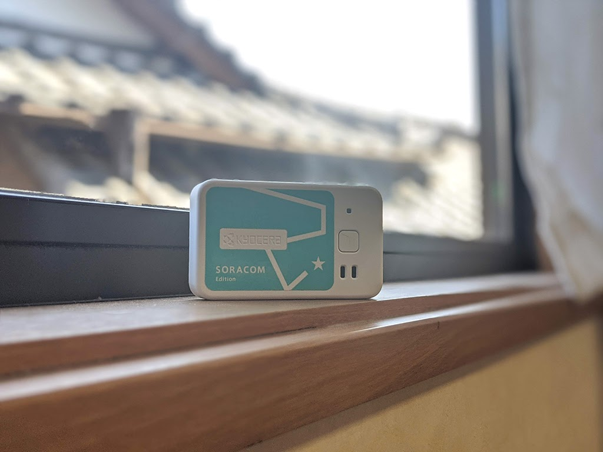
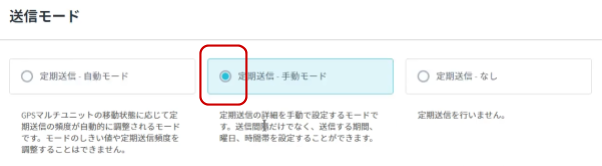
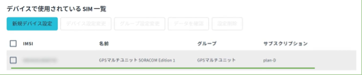
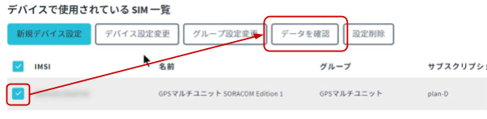
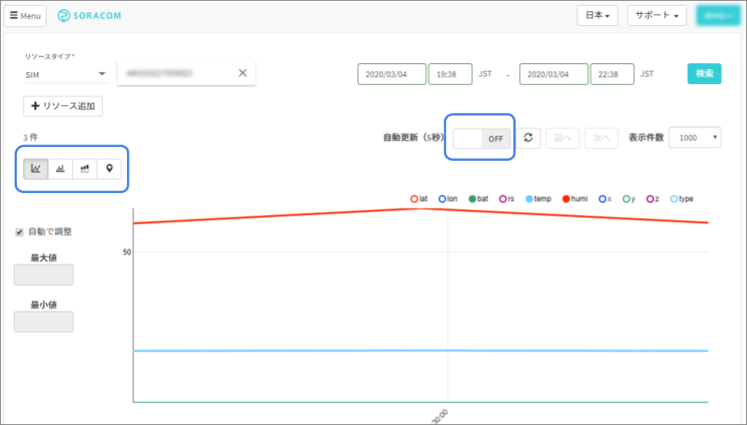
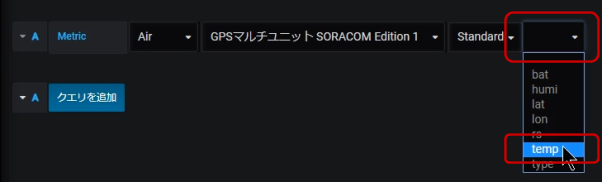
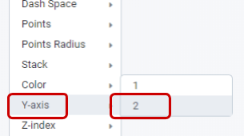
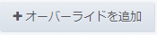

レシピ難易度：★☆☆☆☆
4種のセンサーとバッテリーを内蔵した LTE-M 通信 IoT デバイス「GPS マルチユニット SORACOM Edition」(以下、GPS マルチユニット)を活用して、室内の温湿度をモニタリングして健康管理に役立てるレシピです。

本レシピは、動画コンテンツも用意しております。本レシピの動いている様子を、映像で確認できますので、ぜひ動画もご覧ください。
本レシピを行うのに必要な時間、概算費用
本レシピは以下の通りです。
- 必要な時間: 約1時間
- 概算費用: 約11,100円
※ 概算費用: ハードウェアや SORACOM を始めとした各種サービスの概ねの費用 (税や送料などの付帯費用や無料枠適用は考慮しないものとしています)
このコンテンツの進め方
ページの内容を読み、また作業を行ったら右下の［Next］を押して次のステップへ進みます。また、［Back］を使って戻ったり、左のナビゲーションメニューでもページの移動が可能です。
左上の［×］を押してコンテンツを終了することができます。また、ページを開きなおすことで再開できます。ページのアドレスはブラウザの［履歴］メニューを利用してください。
本レシピを行うためには以下のものをご用意ください。
ハードウェア
品名 | 数量 | 価格 | 購入先 | 備考 |
GPSマルチユニットSORACOM Edition（バッテリー内蔵タイプ）スターターキット | 1 | 11,000円 | キットの中には以下のものが含まれています。
| |
パソコン | 1 | ― | ― |
|
(必要な方のみ) USB 型 AC アダプタ | ― | ― | ― | GPS マルチユニット SORACOM Edition の充電に利用します。パソコンからの給電でも代用可能です。 |
(必要な方のみ) キッチン用スポンジ入れ | ― | ― | ― | GPS マルチユニット SORACOM Editionの設置用です。 100円ショップ等で入手可能です。 |
※ 金額はレシピ作成時となります。ソラコムで販売している金額は税抜き・送料別です。
その他必要なもの
必要なもの | 費用 | 作成方法など |
SORACOM アカウント | 無料※ |
※ アカウント作成・維持の費用の料金です。
設置に利用したもの
本レシピで設置時に利用した部材です。必須ではありませんがご参考にお使いください。
品名 | 数量 | 備考 |
キッチン用スポンジ入れ | 1 | 100円ショップ等で入手可能です。 |
両面テープ | 1 | 固定用です。設置面を傷めないよう配慮ください。 |
GPS マルチユニットは SIM を挿入することでセルラー通信(LTE-M)を通じて、クラウドと連携できるようになります。そのため、まず GPS マルチユニットに同梱されている SIM を SORACOM へ登録をしましょう。
※ すでに登録済み、もしくは登録済みの別の SIM を利用する場合は次へお進みください。
登録の方法は発注済みの SIM を登録する(JP)をご覧ください。約5分で完了します。
登録が完了すると SIM 管理の一覧に表示されますので、確認ください。

SORACOM 特定地域向け IoT SIM (以下 SIM) をカードから切り離し、GPS マルチユニットの側面に挿入します。
GPS マルチユニットの側面を開け、SIM トレイ (赤色) を取り出す。
爪で引っ掛けるようにして取り出します。
SIM を SIM トレイに乗せる。
SIM トレイに収まるように SIM を乗せます。SIM の方向に気をつけてください。また、SIM トレイは無くさないようにしてください。

SIM トレイごと GPS マルチユニットに挿入する。
元々入ってた向きで SIM トレイごと SIM を GPS マルチユニットに挿入します。このとき、SIM トレイから SIM が飛び出ないように気をつけてください。

最後に側面を閉じて終了です。

GPS マルチユニットに挿入した SIM の IMSI (クレジットカードサイズのカードの裏面に記載されている 15 桁の番号) を使用しますので、すぐ取り出せるようにしておいてください。
ここでの作業は動画 (約1分) でもご覧いただけます。
GPS マルチユニットの設定は SORACOM ユーザコンソール上で行います。
SORACOM ユーザーコンソールにログインした後［Menu］>［ガジェット管理］>［GPS マルチユニット］とクリックします。

GPS マルチユニット管理画面が表示されます。ここには、GPS マルチユニットとして利用しているSIM一覧が表示されます。初めて利用する場合は「データが見つかりません」と表示されますが、正常です。
［新規デバイス設定］をクリックします。

GPS マルチユニットに挿入した SIM にチェックをつけてから［次へ：グループを選択］をクリックします。
複数 SIM を持っている場合は IMSI で見つけ出すようにしてください。
※図では「名前」を登録してあるため、見つけやすくなっています。

"新規グループを作成" をクリックし、グループ名入力してから［次へ：設定を編集］をクリックします。
グループ名は任意です。日本語も利用可能です。ここでは GPSマルチユニットとしています。

GPSマルチユニットの設定を行います。
送信内容
「温度」「湿度」にチェックがついているようにします。(位置情報のチェックは外します)
送信先
「SORACOM Harvest (Lagoon)」 にチェックをつけます。
送信モード
「定期送信 ― 手動モード」にチェックをつけます。

定期送信 ― 手動モード 詳細設定
送信間隔を 1 と入力します。
ここまで入力が完了したら、最後に［保存］をクリックします。
すると以下のダイアログが表示されるので［デバイス一覧に戻る］をクリックします。

GPS マルチユニット管理画面に戻りますが、先ほど設定した SIM が一覧に表示されていることが確認できます。

設定を GPS マルチユニット本体に反映させる。
GPS マルチユニットのファンクションボタン（本体表面の四角のボタン）を1秒ほど押します。すると LED が緑色に点灯します。

GPS マルチユニット本体から SORACOM に保存されている設定情報を取得して設定が反映されます。また、設定が反映された GPS マルチユニットは新たな設定で動き続けるようになります。
以上で GPS マルチユニットの設定は終了となります。
SORACOM Harvest Data を利用して、設定が正しく反映されているか確認します。
GPS マルチユニット管理画面で、先ほど設定したSIMにチェックを付けて［データを確認］をクリックします。

以下のようにグラフが確認できます。SORACOM Harvest Data の操作として、画面左側のグラフ種類を選んだり、画面中央の「自動更新」で自動的に新たなデータを表示できます。

「temp(温度)」「humi(湿度)」「rs(電波強度)」「bat(電池残量)」「type(送信モード)」の 5つの値が1分間隔で送信されていれば、設定成功です。
センシングデータが確認できるようになったので、GPS マルチユニットを設置して環境情報の取得を行います。今回は室内へ設置してみました。
両面テープ等で直接固定しても良いのですが、100円ショップなどで手に入る「キッチン用スポンジ置き」が GPS マルチユニットを入れるのにちょうどいいサイズだったので利用してみました。プラスチック製で水切りができるタイプは軽量かつ通気性もよいため、センシングへの影響も最小限で済みます。
様々な設置方法が考えられるでしょう。100円ショップや DIY ストア等、特にキッチンや文具などの収納関係を見てみると、良さそうなものがあるかもしれません。
設定と設置が完了したら、蓄積されたデータを SORACOM Lagoon で活用していきます。
SORACOM Lagoon 用語解説
ここで SORACOM Lagoon で使われる用語を解説します。
用語 | 意味 |
プラン | SORACOM Lagoon の契約プランです。機能と料金が異なります。SORACOM Lagoon のご利用料金に機能や料金の比較表があります。 |
メトリクス (メトリック) | データが格納されている先です。SORACOM Lagoon では以下の4つの中から選び、その中からノード(SIMや回線)を選択します。
|
データソース | メトリクスの参照先です。SORACOM Lagoon では "Harvest" (= SORACOM Harvest) を選ぶとメトリクスが展開されます。 Grafana ではテスト用のランダムデータが表示されます。 |
パネル | パネルはデータを表示する領域です。データソースとメトリクスを指定すると、そのメトリクス(たとえばSIM)のデータをパネルで使えるようになります。 様々なパネルが存在します。 |
ダッシュボード | 複数のパネルを束ねて「1枚の画面」にしたものがダッシュボードです。共有の単位となります。 |
SORACOM Lagoon ユーザー (Lagoon ユーザー) | SORACOM Lagoon へログインするためのユーザー(IDとパスワードの組) SORACOM ユーザコンソールへのログインとは異なるユーザ一覧となり、皆さん自身で登録・削除が可能です。ダッシュボードやパネルを編集できる「編集可能」と表示専用の「読み取り」の2段階の権限を設定できます。 作成可能数はプランによります。 |
データリフレッシュ | SORACOM Harvest から SORACOM Lagoon へデータが反映される事、もしくは反映タイミングとなります。反映タイミングはプランによります。 |
アラート | メトリクスのデータに対して条件を設定し、その条件を満たしたら通知を行う仕組みの事です。 |
SORACOM ユーザーコンソールの［Menu］>［データ収集・蓄積・可視化］>［SORACOM Lagoon］とクリックします。

［SORACOM Lagoon の利用を開始する］をクリックします。

プランのうち［Free］を選択したあと［続行する］をクリックします。

SORACOM Lagoon ユーザーの初期ユーザーに設定するパスワードを入力した後、［利用開始］をクリックします。

SORACOM Lagoon の有効化に成功すると、以下のように SORACOM Lagoon コンソールへのリンクと、Lagoon ユーザーの一覧が管理できるようになります。
この画面を SORACOM Lagoon 管理画面と呼びます。

SORACOM Lagoon 管理画面は、SORACOM Lagoon が有効化されている間は ［Menu］>［データ収集・蓄積・可視化］>［SORACOM Lagoon］で表示する事ができます。
SORACOM Lagoon 管理画面を表示したあと、［SORACOM Lagoon console にアクセス］をクリックします。
※ SORACOM Lagoon 管理画面は ［Menu］>［データ収集・蓄積・可視化］>［SORACOM Lagoon］で表示する事ができます。

SORACOM Lagoon へログインします。
メールアドレス (SORACOM ユーザコンソールへログインする際のメールアドレス) と、SORACOM Lagoon 初期ユーザ作成時に利用したパスワードでログインします。

ログインに成功すると、以下のような画面が表示されます。これが SORACOM Lagoon ログイン直後の画面です。ここから「ダッシュボード」や「パネル」を作成していきます。

作成アイコン にカーソルを乗せると表示される「作成」メニューから［ダッシュボード］をクリックします。
にカーソルを乗せると表示される「作成」メニューから［ダッシュボード］をクリックします。

［Graph］ をクリックします。

"Panel Title" >［編集］をクリックします。

"メトリック" タブでノード(= SIM) をクリックし、GPS マルチユニットに紐づいている SIM を選びます。
データソースは "default" に、メトリクスは "Air" になっているので、あとはノード(= SIM) を選びます。

選んだ時点で、全データが表示されます。
表示データを "temp" のみにします。
データの項目リストをクリックして "temp" をクリックします。

選ぶと、即時グラフに反映されます。
［クエリを追加］をクリックします。
同じデバイスから出てきている「別のデータ」を表示するには、新たに系列を追加することになります。
ノード(= SIM) を同じように選択した後、データ項目を "humi" とします。
操作は先ほどと同様です。
ここまでの操作で「特定の SIM から出力された温度と湿度を一つのグラフに表示する」事が出来ました。（表示範囲を「過去15分間」としています）
画面右上のダッシュボードに戻る ボタンをクリックします。
ボタンをクリックします。
ここからの作業
ダッシュボードでは、右上の保存ボタン でダッシュボードを保存したり、パネルを追加ボタンでパネルをダッシュボードに追加していくことになります。
でダッシュボードを保存したり、パネルを追加ボタンでパネルをダッシュボードに追加していくことになります。
また、既存のパネルは "Panel Title" のクリックで表示される［編集］から内容を変更できます。
以上の作業を繰り返して、ダッシュボードを構築していくことになります。
グラフの表現として以下のカスタマイズをしてみましょう。
- パネルタイトルを「温湿度」
- Y軸の単位、表示レンジ、ラベル
- 凡例を右側に表示
- 折れ線グラフのデータポイントに点を描画
- 折れ線グラフの系列を「温度＝暖色、左のY軸」「湿度＝寒色、右のY軸」
これらの設定を行った結果が以下の図です。 (背景を Light に設定しています)
パネルタイトルを「温湿度」
"全般" タブの "タイトル" を入力すると、パネル上部の "Panel Title" の部分が、タイトルで入力した内容になります。
Y軸の単位、表示レンジ、ラベル
"軸" タブで設定します。最終的には以下のように設定します。
単位
「左 Y」や「右 Y」でそれぞれ必要な単位を選んでいきます。
今回は左Yには "℃" 、右Y は "%H" を指定しています。
表示レンジ
「最小」と「最大」を設定することで表示レンジを指定できます。空白にするとデータの表示が収まるようにレンジが動的に変化します。
今回は左(温度) は「-10 ～ 45」、右(湿度)は「0 ～ 100」としました。
ラベル
ラベルはそれぞれ「左 ＝ 温度」「右 ＝ 湿度」と入力しています。
凡例を右側に表示
標準では凡例はパネルの左下に表示されます。これを右上にできます。
"凡例" タブから "右側に表示" にチェックをつけるだけです。

折れ線グラフのデータポイントに点を描画
"表示" タブで設定します。［描画オプション］をクリックしたあと、 "描画モード" の "点" にチェックを入れます。天の半径を調整 (今回は 4 にしています) します。
以下のように、折れ線グラフの計測点部分に点が付与されるようになります。
折れ線グラフの系列を「温度＝暖色、左のY軸」「湿度＝寒色、右のY軸」
このままだと、温度湿度共に左Y軸にデータが割り当てられている状態ですので、ここから湿度を右Y軸に割り当てます。同時に色も変更します。
"表示" タブで設定します。［系列のオーバーライド］をクリックしたあと［オーバーライドを追加］をクリックします。
"エイリアスもしくは正規表現" に humi と入力します。
をクリックします。すると様々な「グラフ属性」が表示されます。
「グラフ属性」の中から［Y-axis］>［2］をクリックします。
Y-axis の 1 が「左Y軸」、2が「右Y軸」となります。これで "humi" は "右Y軸" に割り当たるように「属性が上書き」されたわけです。上部に表示されているグラフにも変化が出たと思うので確認してください。

今度は "humi" の折れ線グラフ色を変更してみます。先ほど同様に "humi" のをクリックします。次は ［color］>［change］をクリックします。
カラーパレットが表示されるので、好きな色 (今回は寒色系の色) を選ぶ、もしくはカラーコード等で色を指定してください。
以下のように色が変化したことが見て取れるでしょう。
最後に「温度」を暖色系にしてみます。
をクリックし、 "エイリアスもしくは正規表現" には temp と入力します。
"temp" のをクリックします。次は ［color］>［change］をクリックし、カラーパレットから暖色を選びます。
最終的には「系列のオーバーライド」は以下のようになります。
ほかにも様々な属性情報の設定が可能ですので、試してみてください。
本レシピでは費用がかかるサービスを利用しています。
本項をよく読み、必要な操作や解除作業を行うようにして、想定外の費用が掛からないようにしてください。
費用について
ここで記載している金額は全て税別、送料別となります。
SORACOM プラットフォームの利用料金
サービス／機能 | 料金 |
(今回の利用であれば 1MB 以内で収まる範囲) | |
| |
今回は Free プラン(無料)を使用しました。 |
※ 費用詳細はリンク先をご確認ください。
グループ解除
SORACOM Harvest Data 等、「機能が有効になっているグループに所属している SIM × 費用」となっているサービスにおいては、「機能を OFF にする」することで費用の発生を抑えることができます。またもう1つの方法として「グループに所属している SIM の数を減らす(= 解除する)」事でも費用を抑える事ができます。
グループ解除の方法はグループからの解除 (JP)をご覧ください。
SORACOM Harvest Data のデータ削除
SORACOM Harvest Data は基本的にはデータ保管料は無料※です。そのため、保存しておいても害はありませんが、デモ等で利用する際にはデータを綺麗にしておく必要が出てくるため、データ削除について解説します。
※発生から40日を超えたデータは削除されます。40日以上データを保管したい場合はデータ保持期間延長オプション利用料金をご利用ください。
SORACOM Harvest Data 画面 (［操作］>［データを確認］) のデータテーブルで、削除したいデータのチェックボックスを付けた後に［削除］をクリックします。表示されたダイアログで改めて［削除］をクリックすると、削除されます。
※ 複数のデータにチェックをつければ一括で削除可能です。

データの復元はできませんのでご注意ください。
SORACOM Lagoon の解約
SORACOM Lagoon はオンラインで解約が可能です。 Free プランであれば有効化しておいても費用は発生しませんが、長期に渡って利用しない場合には解約も選択いただけます。
解約の方法はSORACOM Lagoon の解約(JP)をご覧ください。
本レシピでは、センサーや電源の事を考えなくとも利用可能なデバイスで、「簡単に現場のデジタル化」を実現しました。SORACOM Lagoon を活用すれば、アプリケーション開発の手間も減らすことができるため、「IoT の全体像を知りたい」といった方にも向いているかと思います。
よくあるご質問はLet's try IoT プロトタイピング ～ 健康管理や肌の乾燥を防ぐ仕組みを作ろう 〜 動画とQAのご紹介でご案内しています。こちらもご覧ください。